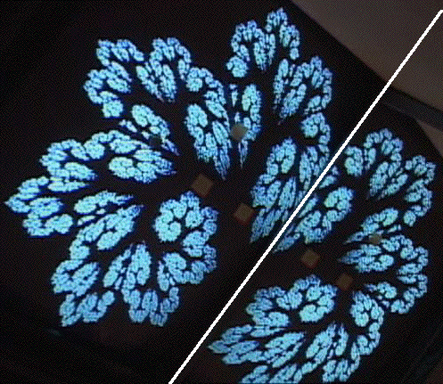

|  |
| The left side of the white line is the monitor, the right side the mirror. |
| The particular structure of the fractal image is determined by the angle of the camera, the position of the camera relative to the monitor, and the angle between the monitor and the mirror. |
Return to Sample.